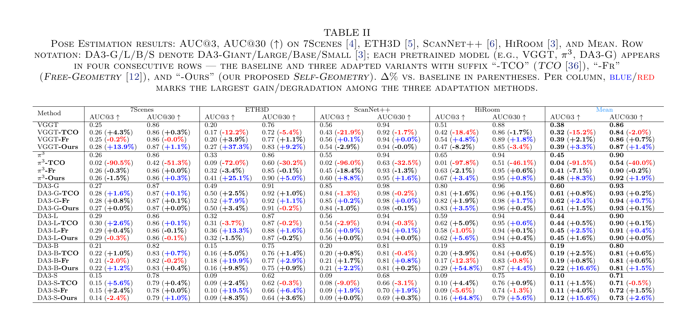
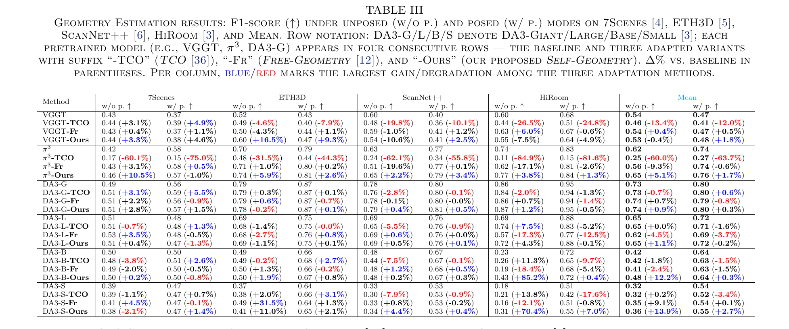

TL;DR: Self-Geometry is a GT-free and plug-and-play test-time adaptation pipeline that imposes explicit multi-view geometric constraints on pretrained 3D VFMs (VGGT, π3, DA3) by using 2D pixel correspondences as pseudo GT — delivering consistent pose and geometry gains across six VFMs and four benchmarks within two minutes per scene.
Recent Vision Foundation Models (VFMs) predict depth, camera pose, and pointmap in a single forward pass without per-scene optimization, achieving strong generalization. However, enforcing explicit multi-view geometric consistency, e.g., through bundle adjustment, is computationally costly and is thus not imposed during VFM pretraining, so such inconsistency can arise. To address this, implicit self-consistency derived from model outputs (e.g., pointmaps, features), though enforced at test-time in prior work, delivers inherently limited performance gain, especially on scenes where the pretrained VFM is highly inaccurate. In contrast to this implicit signal, we propose Self-Geometry, a plug-and-play test-time adaptation pipeline that directly imposes explicit multi-view geometric constraints using 2D pixel correspondences as pseudo ground-truth. Our proposed Self-Geometry consists of Geometric Disentanglement Optimization, which combines Multi-View Consistency and Epipolar Consistency losses with Gradient Disentanglement to prevent gradient conflict; Frame Angular-Neighbor, a view sampler based on SO(3) geodesic distances for lightly imposing these constraints; and Lightweight TTA, which adapts VFMs via LoRA. Our method achieves consistent improvements in both pose and geometry estimation across six VFMs (VGGT, π3, DA3-Giant/Large/Base/Small) and four benchmarks (7Scenes, ETH3D, ScanNet++, HiRoom).

Existing implicit self-consistency methods barely improve where the pretrained VFM is most inaccurate. We adapt the model with explicit multi-view geometric constraints instead.

Self-Geometry adapts a frozen pretrained VFM to a target scene through three complementary components: GDO, FAN, and Lightweight TTA.

Combines the point-to-point MVC Loss (supervises pose & depth jointly) and the depth-independent point-to-line EC Loss (supervises pose alone), then applies Gradient Disentanglement to prevent the two losses from conflicting on the shared camera-pose parameters.
An SO(3)-guided view sampler that selects the target view maximizing SO(3)-bin entropy (Geometry-Rich View Selection) and samples source views from each angular bin (Angular-Neighbor Sampling) — achieving uniform scene coverage without scene-scale normalization.
Inserts LoRA only into the QKV weights of the pretrained VFM's attention blocks. The pretrained parameters remain frozen and only LoRA is updated, completing per-scene adaptation within two minutes on a single NVIDIA RTX PRO 6000.
Across six pretrained VFMs (VGGT, π3, DA3-Giant/Large/Base/Small) and four benchmarks (7Scenes, ETH3D, ScanNet++, HiRoom), our proposed Self-Geometry outperforms Free-Geometry and TCO on most Mean columns and achieves the largest Mean improvements over the frozen baselines in both Pose and Geometry Estimation.


Drag the slider to compare each pretrained VFM's baseline reconstruction with the one adapted by our Self-Geometry. The two point clouds share the same camera — rotating one rotates the other. Each pair shows the top scenes by geometry F1-score improvement on the corresponding benchmark.
Static side-by-side comparison across representative scenes. Compared with Original, TCO, and Free-Geometry, our proposed Self-Geometry substantially reduces error regions in both depth error maps and fused pointclouds.

This research was supported by the Creative Vision and Multimedia Lab (CMLab) at Chung-Ang University and the Efficient Neural Computing Lab (ENC Lab) at Kyung Hee University. We thank the authors of VGGT, π3, and Depth Anything 3 for releasing their pretrained models, and the authors of Free-Geometry and TCO for their public baselines.
@article{youn2026selfgeometry,
title = {Self-Geometry: GT-Free and Plug-and-Play Test-Time Adaptation
for Geometrically Consistent 3D Vision Foundation Models},
author = {Seokhyun Youn and Dahyeon Kye and Sung-Ho Bae and Jihyong Oh},
journal = {arXiv preprint arXiv:xxxx.xxxxx},
year = {2026}
}